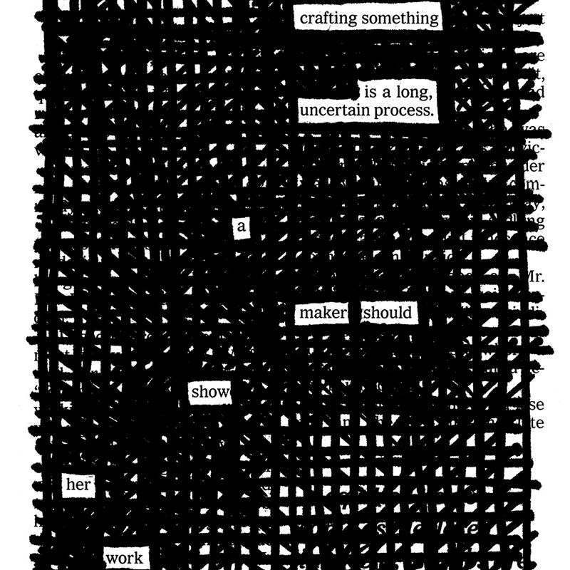

“Creativity is not a talent. It is a way of operating.”
—John Cleese
When I have the privilege of talking to my readers, the most common questions they ask me are about self-promotion. How do I get my stuff out there? How do I get noticed? How do I find an audience? How did you do it?
I hate talking about self-promotion. Comedian Steve Martin famously dodges these questions with the advice, “Be so good they can’t ignore you.” If you just focus on getting really good, Martin says, people will come to you. I happen to agree: You don’t really find an audience for your work; they find you. But it’s not enough to be good. In order to be found, you have to be findable. I think there’s an easy way of putting your work out there and making it discoverable while you’re focused on getting really good at what you do.
Almost all of the people I look up to and try to steal from today, regardless of their profession, have built sharing into their routine. These people aren’t schmoozing at cocktail parties; they’re too busy for that. They’re cranking away in their studios, their laboratories, or their cubicles, but instead of maintaining absolute secrecy and hoarding their work, they’re open about what they’re working on, and they’re consistently posting bits and pieces of their work, their ideas, and what they’re learning online. Instead of wasting their time “networking,” they’re taking advantage of the network. By generously sharing their ideas and their knowledge, they often gain an audience that they can then leverage when they need it—for fellowship, feedback, or patronage.
I wanted to create a kind of beginner’s manual for this way of operating, so here’s what I came up with: a book for people who hate the very idea of self-promotion. An alternative, if you will, to self-promotion. I’m going to try to teach you how to think about your work as a never-ending process, how to share your process in a way that attracts people who might be interested in what you do, and how to deal with the ups and downs of putting yourself and your work out in the world. If Steal Like an Artist was a book about stealing influence from other people, this book is about how to influence others by letting them steal from you.
Imagine if your next boss didn’t have to read your résumé because he already reads your blog. Imagine being a student and getting your first gig based on a school project you posted online. Imagine losing your job but having a social network of people familiar with your work and ready to help you find a new one. Imagine turning a side project or a hobby into your profession because you had a following that could support you.
Or imagine something simpler and just as satisfying: spending the majority of your time, energy, and attention practicing a craft, learning a trade, or running a business, while also allowing for the possibility that your work might attract a group of people who share your interests.
All you have to do is show your work.
